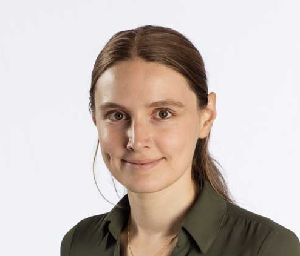

I am an Assistant Professor of Economics at the University of Toronto. My research focuses on guaranteed income and cash transfers, how decision-makers interpret evidence, and how we learn across studies.

Selected publications and working papers.